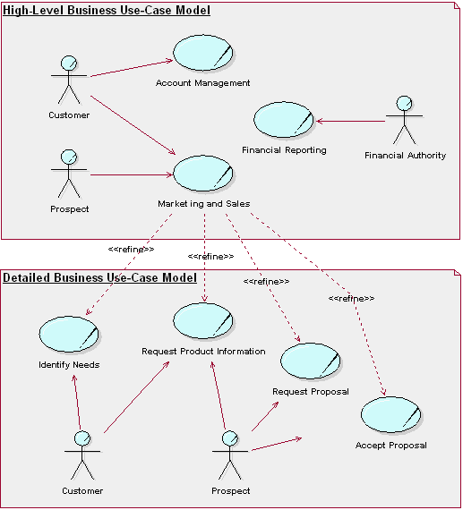

| Концепция: Business Process Decomposition |
 |
|
| Связанные элементы |
|---|
IntroductionA business process is a group of logically related (and typically sequenced) activities that use the resources of the organization to provide defined results in support of the organization's objectives -- delivering value in the form of product or service, often to an external party such as a customer or partner. The process, possibly decomposed into sub-processes, has associated organization, resource, and data models to capture all aspects of the process, including not only performing roles, but required/used resources, ownership of resources, accountability, definitions of items passed into and out of tasks, and so on. This is a very concrete view of process, and so we adopt the view that business processes are realizations of the bounding business system's business use cases. Therefore we can apply the same taxonomy to them as we do to business use cases (see Guideline: Business Use-Case Model), that is:
We also allow processes to be event-driven, that is, they are triggered by conditions (resulting in Artifact: Business Events) that arise in the conduct of business. Process LevelIn Concept: Modeling Large Organizations (extract in quotes below), we describe a technique for accommodating the needs of executive management, as well as business process owners, by defining business use cases at two levels of detail: "One model, for the executives, would contain a set of high-level business use cases that showed the intent and purpose of the organization. The other model, for the process owners, would contain a detailed set of use cases that helped clarify how the organization needs to function internally. For each high-level business use case, you could define one, or several, detailed business use cases representing the same activities in the organization..." The figure below illustrates this refinement of use cases.  Note that the lower-level, more detailed use cases are still use cases for the same business system as the high-level use cases, that is they still represent a black-box view of the behavior of that business system. For each of these levels of use-case, there is a corresponding realization, which we can describe as a business process, it is possible therefore to regard this kind of analysis as process decomposition. Process decomposition analyzes business processes and sub-processes to a level of detail at which it is feasible and useful to construct an activity diagram for the sub-process. Input to process decomposition can come from Level 1 business process models, perhaps written only as narratives, and associated with the corresponding Level 1 business use cases by realization relationships. A Level 1 process is the high-level description of what a business system does, meeting the needs of executive management, as described above. Process decomposition results in a set of documented Level 2 processes captured in the Business Analysis Model as Business Use-Case Realizations -- at Level 2 it is typically possible to construct an activity diagram for the process, so as a rule of thumb we have three levels of decomposition -- level 1 process, level 2 process and activity (composed of activity nodes). There are several ways to illustrate a business use-case realization -- we focus on activity diagrams (see Guideline: Diagrams in the Business Analysis Model) here because they have a form and semantics that will be familiar to most business analysts interested in business process modeling. Such models are especially useful in identifying inefficiencies in current processes, leading to identification of opportunities for automation and business transformation. Business Process Decomposition in SOMA mapped to Use-Case Refinement.IBM Global Business Services (GBS) Service-Oriented Modeling and Architecture (SOMA) is an approach and set of techniques for SOA that bridge the gap between business and IT. In the figures below, we map the results of process decomposition as SOMA would show it, to the equivalent results in business modeling using business use-case refinement. We include this to show that the two approaches are really only using different terminology and representations for the same concepts, and yield the same result in the end -- a set of business process descriptions that can be used to bridge the gap to automation, for example, using IT systems, or services in a Service-Oriented Architecture (SOA) initiative.
The figure above shows process decomposition into sub-processes and use cases in a notational form used in SOMA. The notion of a sub-process is a convenient construct used to denote further levels of refinement of a process, into its constituent parts (sub-processes), recursively. Once we get to the point where we begin to look at user-system interactions, we stop and label the sub-process a leaf-level sub-process. A leaf-level sub-process is potentially a composite of system use cases, for example, a leaf-level sub-process of Process Order might have have use-cases of Get Customer Name, Get Customer Address and Get Order Items. The figure below shows the equivalent structure expressed using RUP business modeling notation.
This structure shows the same three levels, with the leaf-level sub-processes being represented by action nodes in the activity diagram. Note that what SOMA shows as use cases at the lowest level, are not Business Use Cases as we define them here: they are -- as are the corresponding activity nodes (action nodes) in the Business Use-Case Realizations -- the loci for possible interaction(s) with IT systems. SOMA's use cases are therefore closer to the use cases that arise in application development, as it is described in RUP (see Guideline: Going from Business Models to Systems). Using UML activity diagrams to model business processes it is possible to identify key business workers, business significant milestones and events, task sequences and dependencies, business entities modified and exchanged, and interactions within and between organizations. A process model should concretely identify "what" needs to take place, not "how" tasks are carried out, since that is an aspect of business process that can change over time, especially in response to changes in business environment or technology. |
© Copyright IBM Corp. 1987, 2006. Все права защищены.. |